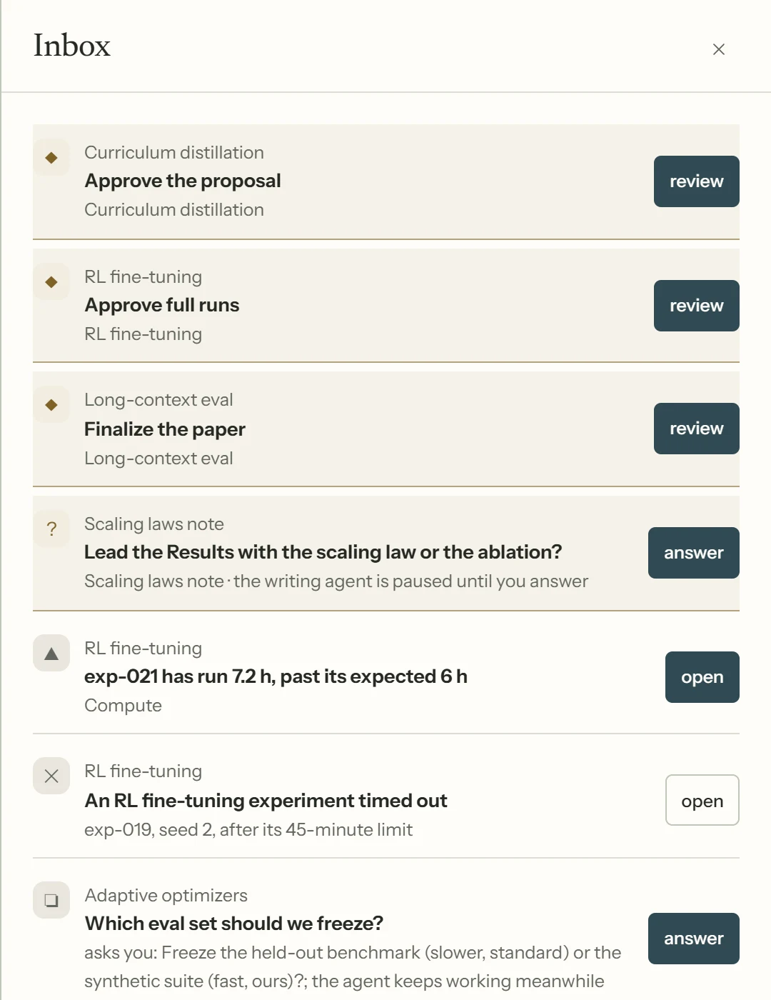
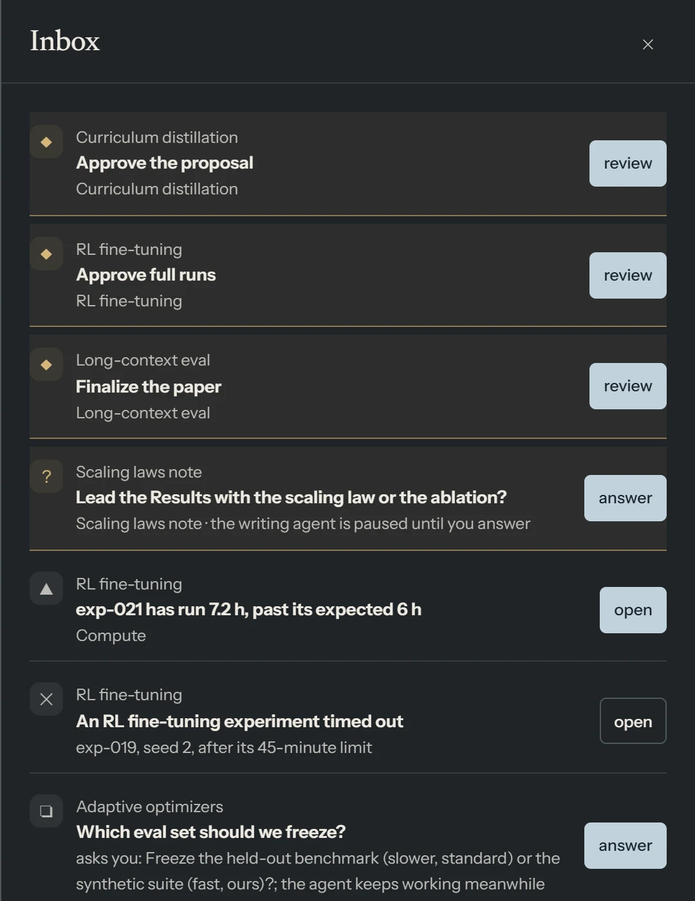
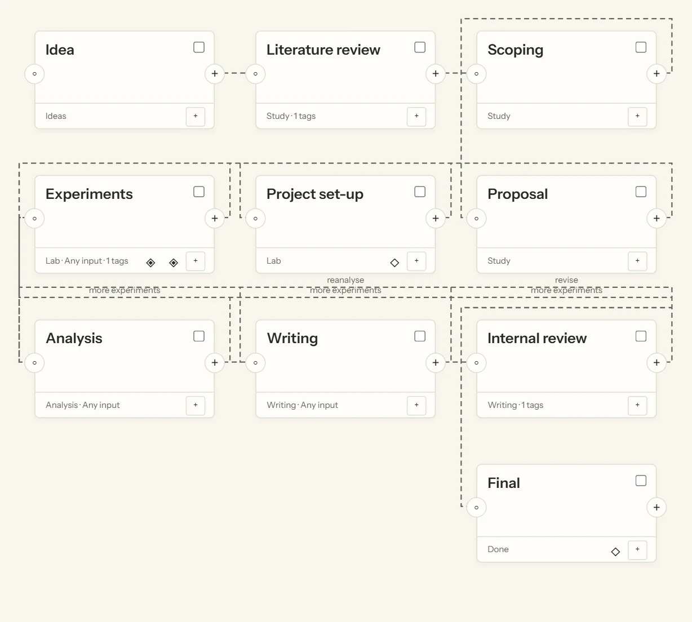
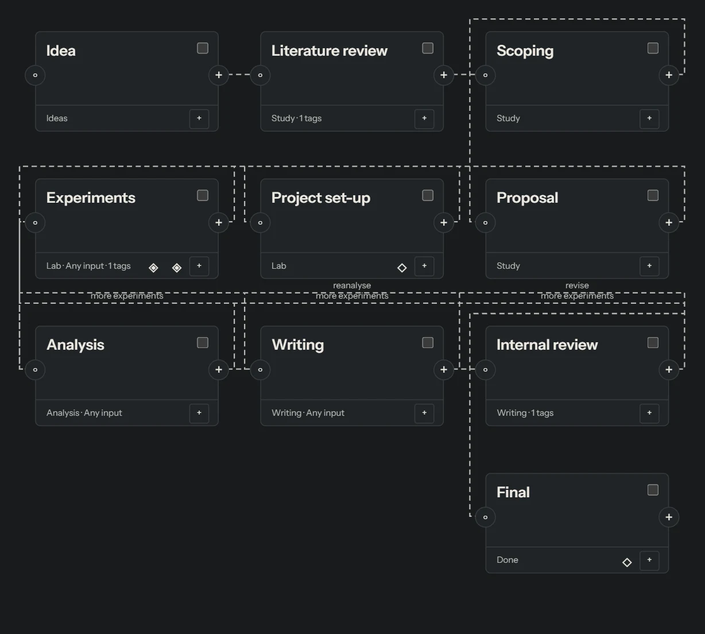
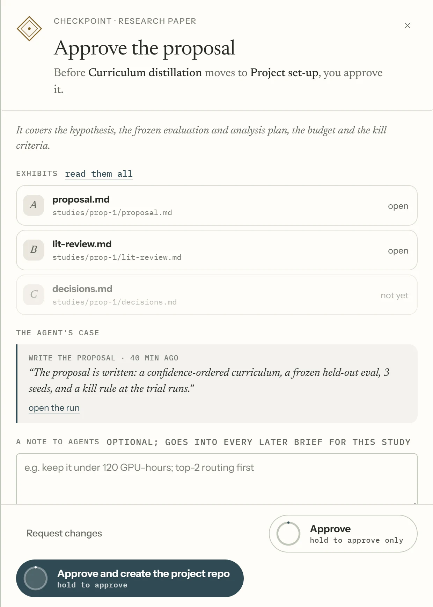
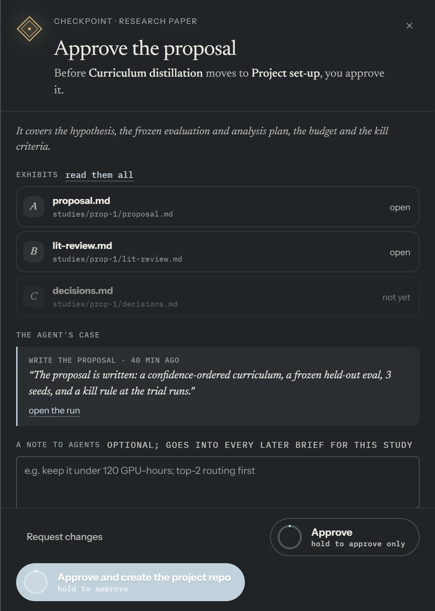

One Inbox for everything that needs you
Questions, permission requests, checkpoints and interrupted work from every project, in one list. Answer from there, or open the agent's conversation.
Start and follow work

ARLOtope runs AI agents such as Claude Code, Codex and opencode on your research projects, and shows their work as a small lab you can watch. Projects move from room to room; you step in only when an agent needs you.
A live picture of all your projects at once. Drag it to turn it.
Each one is an AI agent working on a project. They walk to what they need: shelves to read, benches to run code, desks to write. Click one to see what it is doing.
When an agent finishes a step, the project's card is carried to the next room. Here, A new idea moves on to reading, and another agent picks it up.
The agent writing Results report isn't sure how to begin. It stops, and its question waits in your Inbox.
Your answer, the table, goes straight to that agent, and it gets back to work.
Before experiments start on Better baselines, its plan needs your approval. The project waits at the lantern until you say yes. Agents can't approve their own work.
The project moves to the experiments room, and an agent sets it up. Your approval is saved with the project.
Faster training finishes its experiments. The agent shares what it found, with every number linked to the run behind it, and the project moves on to analysis.
Questions, permission requests, checkpoints and interrupted work from every project, in one list. Answer from there, or open the agent's conversation.
Start and follow work

Connect tasks in order or in parallel, give each one a skill or written instructions, and put checkpoints where you want a say. Research workflows are included to start from.
Tasks, agents and rooms

A checkpoint opens with the files behind it and the agent's own case. Approve it, ask for changes, or leave a note that every later agent on the project will read.
Approvals and evidence

Bring Claude Code, Codex, opencode or any ACP agent, signed in with its own account or an API key. Keep your repositories, environments and runners. Work on this computer or on a machine over SSH.
irm https://github.com/AkxarLabs/ARLOtope/releases/latest/download/install.ps1 | iexcurl -fsSL https://github.com/AkxarLabs/ARLOtope/releases/latest/download/install.sh | shThen open a new terminal and run arlo. The dashboard opens in your browser. Where things live and how to update, all releases, or run from source.